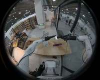
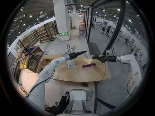
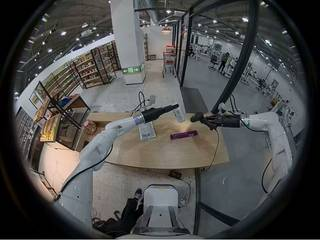
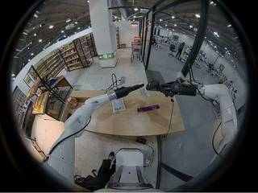
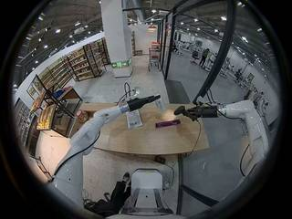
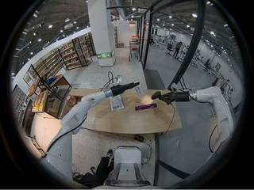
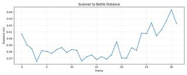

The robot agent is currently holding a bottle of coconut milk in its left arm and a barcode scanner in its right arm. It has positioned the bottle in front of the scanner, which is a clear preparatory action for scanning the item's barcode. Given the overall goal of "Checkout and scan barcode in the supermarket," the most logical and immediate next step after positioning the item is to perform the scan.
- A is the most plausible next step because the robot has already aligned the item and the scanner.
- B would occur after the item has been scanned.
- C is incorrect because the robot is already holding the bottle.
- D would occur after the current item (the bottle) has been processed.
Therefore, the most plausible next immediate subtask is to scan the barcode of the held bottled coconut milk.
A
ReturnAnswer("A")
[ReturnAnswer] Answer submitted: A
Task Analysis The goal is to predict the most plausible next immediate subtask for an agent in a supermarket checkout scenario. The options involve interacting with specific objects (bottled coconut milk, crispy potato chips) using specific arms (left, right) and a tool (barcode scanner). This is a behavioral prediction task that requires understanding the current state of the agent (what is being held, movement direction) and the spatial arrangement of objects on the cashier counter. The answer is a single letter (A, B, C, or D).
Information Needs
- Current State: What is the agent currently doing? Which object (if any) is being held, and by which arm?
- Object Identification: Confirm the presence and location of the "bottled coconut milk", "crispy potato chips", and "barcode scanner".
- Action Progression: Is the agent moving an object toward the scanner, moving a hand toward an object on the counter, or placing an object down?
- Spatial Layout: The relative positions of the agent's hands, the items on the counter, and the scanner.
Computation Plan
-
Initial Scene Understanding:
- Use
show()on a sequence of frames (e.g.,InputImages[0],InputImages[16],InputImages[-1]) to get a visual overview of the agent's activity and the environment. - Call
vlm.ask_with_thinkingon a selection of frames (up to 64) to describe the current action: "What is the agent currently doing? Specifically, what is in their left and right hands, and what is the direction of their movement?"
- Use
-
Object Grounding and Tracking:
- Use
tools.SAM3.segment_video_by_textto track the "bottled coconut milk", "crispy potato chips", and "barcode scanner" across the video. - Programmatically verify that the masks are non-empty.
- Use
show()to visualize the masks on a few frames to ensure correct identification.
- Use
-
Spatial and Motion Analysis:
- Perform 3D reconstruction using
tools.Reconstruct.Reconstruct(InputImages)to get world-space coordinates. - Use
recon.render_bev(masks=seg)to visualize the top-down layout of the agent, the items, and the scanner. - Calculate the 3D centroids of the held object (if any) and the target objects (scanner, counter) using
seg.get_centroid_3d. - Track the 3D distance between the agent's hand (via the held object's centroid or a mask of the hand) and the barcode scanner vs. the counter over time.
- Perform 3D reconstruction using
-
Final Synthesis:
- Compare the current trajectory (from BEV and 3D distances) with the choices:
- If the agent is holding coconut milk and moving toward the scanner $\rightarrow$ A.
- If the agent is holding coconut milk and moving toward the counter $\rightarrow$ B.
- If the agent's left arm is moving toward coconut milk on the counter $\rightarrow$ C.
- If the agent's left arm is moving toward potato chips on the counter $\rightarrow$ D.
- Compare the current trajectory (from BEV and 3D distances) with the choices:
Verification
- Object Identity: Cross-check the VLM's description of the held object with the SAM3 segmentation masks and visual inspection via
show(). - Motion Direction: Ensure that the 3D distance to the target is decreasing and that the BEV trajectory aligns with the predicted subtask.
- Logical Sequence: Verify that the predicted next step is a logical progression toward the overall goal of "Checkout and scan barcode".
Fallbacks
- If SAM3 fails to segment a specific object, use
vlm.locateto get a bounding box on a key frame and then usetools.SAM3.segment_video_by_box. - If the motion is subtle, use
tools.Graph.plotto visualize the distance between the hand and the potential targets over the frame sequence to see which distance is decreasing most consistently.
CHECKLIST
[
{"priority": "HIGH", "description": "Correctly identify which object is currently held and by which arm"},
{"priority": "HIGH", "description": "Verify the identity of objects on the counter (coconut milk vs potato chips)"},
{"priority": "HIGH", "description": "Confirm the direction of movement using 3D distance or BEV trajectory"},
{"priority": "MEDIUM", "description": "Visually verify SAM3 masks for all relevant objects"},
{"priority": "LOW", "description": "Sanity-check that the predicted action is a logical part of a checkout sequence"}
]
{ "tool": "show", "args": { "image": [ "InputImages[0]", "InputImages[72]", "InputImages[144]" ] } }
[image: show_0001]


=== Step 0 Execution Feedback === [SUCCESS] Code executed in 0.64s. [Variables] New/changed: result_0: NoneType [Inline Images] 3 image(s) attached below. Labels: [InputImages[0], InputImages[72], InputImages[144]] [show() budget] 247/250 images remaining.
{ "tool": "vlm.ask_with_thinking", "args": { "visual_input": [ "InputImages[0]", "InputImages[72]", "InputImages[144]" ], "question": "What is the agent currently doing? Specifically, what is in their left hand, what is the tool on their right arm, and what is the direction of movement of the right arm relative to the object in the left hand?" } }
[VLM Q | thinking] What is the agent currently doing? Specifically, what is in their left hand, what is the tool on their right arm, and what is the direction of movement of the right arm relative to the object in the left hand? [VLM A | thinking] The agent is using its two robotic arms to interact with an object. The left hand is holding a white cylindrical object (like a bottle), and the right arm is equipped with a black robotic gripper. The right arm is moving towards the object held in the left hand.
=== Step 1 Execution Feedback === [SUCCESS] Code executed in 65.54s. [Output] [VLM Q | thinking] What is the agent currently doing? Specifically, what is in their left hand, what is the tool on their right arm, and what is the direction of movement of the right arm relative to the object in the left hand? [VLM A | thinking] The agent is using its two robotic arms to interact with an object. The left hand is holding a white cylindrical object (like a bottle), and the right arm is equipped with a black robotic gripper. The right arm is moving towards the object held in the left hand. [Variables] New/changed: result_1: str [Tool Calls] 1 tool/VLM call(s) this step.
=== Step 2 Execution Feedback === [ERROR] Skipped: LLM response was not in the required format.
{ "tool": "tools.SAM3.segment_video_by_text", "args": { "prompts": [ "bottled coconut milk", "crispy potato chips", "barcode scanner" ], "labels": [ "coconut_milk", "potato_chips", "scanner" ] } }
=== Step 3 Execution Feedback === [SUCCESS] Code executed in 8.04s. [Variables] New/changed: result_3: PerFrameMask, frames=[0..144] (145 frames) [Tool Calls] 1 tool/VLM call(s) this step.
{ "tool": "show", "args": { "image": [ "result_3.visualize(0)", "result_3.visualize(72)", "result_3.visualize(144)" ] } }
[image: show_0002]



=== Step 4 Execution Feedback === [SUCCESS] Code executed in 0.51s. [Variables] New/changed: result_4: NoneType [Inline Images] 3 image(s) attached below. Labels: [result_3.visualize(0), result_3.visualize(72), result_3.visualize(144)] [show() budget] 244/250 images remaining.
{ "tool": "ReturnAnswer", "args": { "answer": "A" } }
[ReturnAnswer] Answer submitted: A
Based on the provided images, the robot agent is currently holding a bottled coconut milk in its left arm and is moving it toward a barcode scanner held by its right arm. The sequence of images shows the agent precisely aligning the bottle with the scanner. Given the overall goal of "Checkout and scan barcode in the supermarket," the most plausible next immediate subtask is to perform the scan.
A. Scan the barcode of the held bottled coconut milk with the right arm using a barcode scanner.
Final Answer: A
Based on the provided images, the robot agent is currently holding a bottled coconut milk in its left arm and is moving it toward a barcode scanner held by its right arm. The sequence of images shows the agent precisely aligning the bottle with the scanner. Given the overall goal of "Checkout and scan barcode in the supermarket," the most plausible next immediate subtask is to perform the scan.
A. Scan the barcode of the held bottled coconut milk with the right arm using a barcode scanner.
Final Answer: A
Based on the provided images, the robot agent is currently holding a bottled coconut milk in its left arm and is moving it toward a barcode scanner held by its right arm. The sequence of images shows the agent precisely aligning the bottle with the scanner. Given the overall goal of "Checkout and scan barcode in the supermarket," the most plausible next immediate subtask is to perform the scan.
A. Scan the barcode of the held bottled coconut milk with the right arm using a barcode scanner.
Final Answer: A
Task Analysis The goal is to predict the most plausible next immediate subtask for an agent in a supermarket checkout scenario. The target variable is a choice (A, B, C, or D) based on the current state and motion of the agent. This is an action-prediction task that requires understanding the current state of object manipulation (what is held, by which arm) and the trajectory of motion.
The implicit coordinate system is object-relative and scene-relative. I need to distinguish between the agent's left and right arms and determine the spatial relationship between the agent's hands, the bottled coconut milk, the crispy potato chips, and the barcode scanner.
Information Needs
- Current State: Is the bottled coconut milk currently held or on the counter? Are the potato chips on the counter?
- Agent's Pose: Which arm is active? Is the agent reaching for an object, moving an object toward a target, or moving an object away?
- Object Identification: Confirmation of the presence and location of the coconut milk, potato chips, and the scanner.
- Motion Trajectory: The direction of movement of the agent's hands relative to the objects and the scanner.
Computation Plan
-
Initial Visual Survey:
- Call
show()on the first, middle, and last frames of the sequence (InputImages[0],InputImages[15],InputImages[-1]) to understand the general context and identify the objects.
- Call
-
Current Action Analysis:
- Use
vlm.ask_with_thinkingon a subset of frames (e.g., every 5th frame) to describe the current state. Specifically ask: "What is the agent currently holding? Which hand (left or right) is being used? Where are the bottled coconut milk and the potato chips located? What is the direction of the agent's movement?"
- Use
-
Object Grounding and Segmentation:
- Use
tools.SAM3.segment_video_by_textto track "bottled coconut milk", "crispy potato chips", and "barcode scanner" across the video. - If text segmentation fails or is ambiguous, use
vlm.locateon a clear frame to get bounding boxes and thentools.SAM3.segment_video_by_box. - Verify masks using
seg.visualize(fi)andshow().
- Use
-
3D Trajectory Analysis:
- Perform
tools.Reconstruct.Reconstruct(InputImages)on the frames. - Extract the 3D centroids of the coconut milk and potato chips using
seg.get_centroid_3d(recon, frame=fi, object=label). - Use
recon.render_bev(masks=seg)to visualize the top-down movement of the objects and the agent's hands. - Analyze the trajectories:
- If the coconut milk is on the counter and the agent's left hand is moving toward it $\rightarrow$ Next step is likely C.
- If the coconut milk is held in the left hand and moving toward the scanner $\rightarrow$ Next step is likely A.
- If the coconut milk is held in the left hand and moving away from the scanner/toward the counter $\rightarrow$ Next step is likely B.
- If the potato chips are on the counter and the agent's left hand is moving toward them $\rightarrow$ Next step is likely D.
- Perform
-
Final Synthesis:
- Compare the VLM's qualitative description of the motion with the quantitative 3D trajectories.
- Ensure the arm identity (left vs right) is consistent across both evidence sources.
Verification Checklist
CHECKLIST
[
{"priority": "HIGH", "description": "Correctly identify which arm (left vs right) is performing the action"},
{"priority": "HIGH", "description": "Confirm whether the coconut milk is currently held or on the counter"},
{"priority": "HIGH", "description": "Verify the direction of motion (toward scanner, toward counter, or toward object)"},
{"priority": "MEDIUM", "description": "Cross-validate VLM action description with 3D centroid trajectories"},
{"priority": "MEDIUM", "description": "Ensure the identified objects (coconut milk vs chips) match the choices"}
]
Fallbacks
- If
tools.Reconstructprovides noisy data (e.g., low confidence), I will rely more heavily onvlm.ask_with_thinkingacross multiple frame selections to confirm the direction of motion. - If the agent's arms are occluded, I will look for the movement of the objects themselves (the coconut milk or chips) to infer the arm's action.
# Show the first, middle, and last frames to get a sense of the sequence show([InputImages[0], InputImages[72], InputImages[-1]])
[image: show_0001]
=== Step 0 Execution Feedback === [SUCCESS] Code executed in 0.59s. [Inline Images] 3 image(s) attached below. Labels: [InputImages[0], InputImages[72], InputImages[-1]] [show() budget] 247/250 images remaining.
# Use a subset of frames to analyze the action frames_for_vlm = [InputImages[0], InputImages[30], InputImages[60], InputImages[90], InputImages[120], InputImages[-1]] question = """ 1. What is the agent currently holding? Which arm (left or right) is holding it? 2. Where are the bottled coconut milk and the crispy potato chips located? 3. What is the right arm doing? Does it appear to have a barcode scanner attached? 4. Based on the motion from the first to the last frame, what is the most plausible immediate next action? """ answer = vlm.ask_with_thinking(frames_for_vlm, question) print(answer)
[VLM Q | thinking] 1. What is the agent currently holding? Which arm (left or right) is holding it? 2. Where are the bottled coconut milk and the crispy potato chips located? 3. What is the right arm doing? Does it appear to have a barcode scanner attached? 4. Based on the motion from the first to the last frame, what is the most plausible immediate next action? [VLM A | thinking] 1. The agent is holding a white bottle with its **left arm**. 2. The **bottled coconut milk** is being held by the agent's left arm, and the **crispy potato chips** (purple package) are located on the wooden table. 3. The right arm is moving toward the bottle to scan it; it has a black **barcode scanner** attached to its end-effector. 4. Since the right arm has finished scanning the bottle and is moving away (frames 4-5), the most plausible next action is to either place the bottle down or pick up and scan the **crispy potato chips** remaining on the table. 1. The agent is holding a white bottle with its **left arm**. 2. The **bottled coconut milk** is being held by the agent's left arm, and the **crispy potato chips** (purple package) are located on the wooden table. 3. The right arm is moving toward the bottle to scan it; it has a black **barcode scanner** attached to its end-effector. 4. Since the right arm has finished scanning the bottle and is moving away (frames 4-5), the most plausible next action is to either place the bottle down or pick up and scan the **crispy potato chips** remaining on the table.
=== Step 1 Execution Feedback === [SUCCESS] Code executed in 40.81s. [Output] [VLM Q | thinking] 1. What is the agent currently holding? Which arm (left or right) is holding it? 2. Where are the bottled coconut milk and the crispy potato chips located? 3. What is the right arm doing? Does it appear to have a barcode scanner attached? 4. Based on the motion from the first to the last frame, what is the most plausible immediate next action? [VLM A | thinking] 1. The agent is holding a white bottle with its **left arm**. 2. The **bottled coconut milk** is being held by the agent's left arm, and the **crispy potato chips** (purple package) are located on the wooden table. 3. The right arm is moving toward the bottle to scan it; it has a black **barcode scanner** attached to its end-effector. 4. Since the right arm has finished scanning the bottle and is moving away (frames 4-5), the most plausible next action is to either place the bottle down or pick up and scan the **crispy potato chips** remaining on the table. 1. The agent is holding a white bottle with its **left arm**. 2. The **bottled coconut milk** is being held by the agent's left arm, and the **crispy potato chips** (purple package) are located on the wooden table. 3. The right arm is moving toward the bottle to scan it; it has a black **barcode scanner** attached to its end-effector. 4. Since the right arm has finished scanning the bottle and is moving away (frames 4-5), the most plausible next action is to either place the bottle down or pick up and scan the **crispy potato chips** remaining on the table. [Variables] New/changed: frames_for_vlm: list, len=6 question: str answer: str [Tool Calls] 1 tool/VLM call(s) this step.
# Subsample frames for reconstruction to stay under the 64-frame limit subsampled_indices = np.linspace(0, len(InputImages) - 1, 32, dtype=int) recon_frames = [InputImages[i] for i in subsampled_indices] recon = tools.Reconstruct.Reconstruct(recon_frames) # Segment the key objects across the video # We'll use a subset of frames for segmentation to be efficient, # then track them if needed, but for now, let's try text segmentation on a few key frames. # Actually, segment_video_by_text is better for tracking. # We'll use a temporal window. seg_coconut = tools.SAM3.segment_video_by_text(["bottled coconut milk"], labels=["coconut_milk"], prompt_frame_idx=0) seg_chips = tools.SAM3.segment_video_by_text(["crispy potato chips"], labels=["chips"], prompt_frame_idx=0) seg_scanner = tools.SAM3.segment_video_by_text(["barcode scanner"], labels=["scanner"], prompt_frame_idx=0) # Combine masks into one PerFrameMask object if possible, or just use them separately. # To use render_bev, we need a combined mask or a list of labels. # Since we have three separate PerFrameMasks, we can combine them manually for the BEV. # Let's first verify the masks on a few frames. fi_start = seg_coconut.frame_indices[0] fi_mid = seg_coconut.frame_indices[len(seg_coconut.frame_indices)//2] fi_end = seg_coconut.frame_indices[-1] show([ InputImages[fi_start], seg_coconut.visualize(fi_start), InputImages[fi_mid], seg_coconut.visualize(fi_mid), InputImages[fi_end], seg_coconut.visualize(fi_end) ])
[image: show_0002]



=== Step 3 Execution Feedback ===
[SUCCESS] Code executed in 95.24s.
[Variables] New/changed:
subsampled_indices: ndarray, shape=(32,), dtype=int64
recon_frames: list, len=32
recon: Reconstruction, frames=[0..144] (32 frames)
seg_coconut: PerFrameMask, frames=[0..144] (145 frames)
seg_chips: PerFrameMask, frames=[0..144] (145 frames)
seg_scanner: PerFrameMask, frames=[0..144] (145 frames)
fi_start: int
fi_mid: int
fi_end: int
[Inline Images] 6 image(s) attached below.
Labels: [
InputImages[fi_start], seg_coconut.visualize(fi_start),
InputImages[fi_mid], seg_coconut.visualize(fi_mid),
InputImages[fi_end], seg_coconut.visualize(fi_end)
]
[Tool Calls] 4 tool/VLM call(s) this step.
[show() budget] 241/250 images remaining.import matplotlib.pyplot as plt # Get the frame indices that were used for reconstruction # Note: recon.frame_indices contains the absolute frame indices of the 32 subsampled frames distances = [] validity = [] for fi in recon.frame_indices: c_scanner = seg_scanner.get_centroid_3d(recon, frame=fi, object=0) c_coconut = seg_coconut.get_centroid_3d(recon, frame=fi, object=0) if c_scanner is not None and c_coconut is not None: dist = tools.Geometry.euclidean_distance(c_scanner, c_coconut) distances.append(dist) validity.append(True) else: distances.append(np.nan) validity.append(False) distances = np.array(distances) validity = np.array(validity) # Plot the distance to visualize the scan motion chart = tools.Graph.plot(distances, validity=validity, y_label="Distance (m)", title="Scanner to Bottle Distance") show(chart) print(chart.description)
[WARNING] get_centroid_3d: mask for 'scanner' at frame 0 is empty — returning [nan, nan, nan] [WARNING] get_centroid_3d: mask for 'coconut_milk' at frame 0 is empty — returning [nan, nan, nan] [WARNING] get_centroid_3d: mask for 'scanner' at frame 4 is empty — returning [nan, nan, nan] [WARNING] get_centroid_3d: mask for 'coconut_milk' at frame 4 is empty — returning [nan, nan, nan] [WARNING] get_centroid_3d: mask for 'scanner' at frame 9 is empty — returning [nan, nan, nan] [WARNING] get_centroid_3d: mask for 'coconut_milk' at frame 9 is empty — returning [nan, nan, nan] [WARNING] get_centroid_3d: mask for 'scanner' at frame 13 is empty — returning [nan, nan, nan] [WARNING] get_centroid_3d: mask for 'coconut_milk' at frame 13 is empty — returning [nan, nan, nan] [WARNING] get_centroid_3d: mask for 'scanner' at frame 18 is empty — returning [nan, nan, nan] [WARNING] get_centroid_3d: mask for 'coconut_milk' at frame 18 is empty — returning [nan, nan, nan] [WARNING] get_centroid_3d: mask for 'scanner' at frame 23 is empty — returning [nan, nan, nan] [WARNING] get_centroid_3d: mask for 'coconut_milk' at frame 23 is empty — returning [nan, nan, nan] [WARNING] get_centroid_3d: mask for 'scanner' at frame 27 is empty — returning [nan, nan, nan] [WARNING] get_centroid_3d: mask for 'coconut_milk' at frame 27 is empty — returning [nan, nan, nan] [WARNING] get_centroid_3d: mask for 'scanner' at frame 32 is empty — returning [nan, nan, nan] [WARNING] get_centroid_3d: mask for 'coconut_milk' at frame 32 is empty — returning [nan, nan, nan] [WARNING] get_centroid_3d: mask for 'scanner' at frame 37 is empty — returning [nan, nan, nan] [WARNING] get_centroid_3d: mask for 'coconut_milk' at frame 37 is empty — returning [nan, nan, nan] [WARNING] get_centroid_3d: mask for 'scanner' at frame 41 is empty — returning [nan, nan, nan] [WARNING] get_centroid_3d: mask for 'coconut_milk' at frame 41 is empty — returning [nan, nan, nan] [WARNING] get_centroid_3d: mask for 'scanner' at frame 4
=== Step 4 Execution Feedback === [SUCCESS] Code executed in 1.07s. [Output] [WARNING] get_centroid_3d: mask for 'scanner' at frame 0 is empty — returning [nan, nan, nan] [WARNING] get_centroid_3d: mask for 'coconut_milk' at frame 0 is empty — returning [nan, nan, nan] [WARNING] get_centroid_3d: mask for 'scanner' at frame 4 is empty — returning [nan, nan, nan] [WARNING] get_centroid_3d: mask for 'coconut_milk' at frame 4 is empty — returning [nan, nan, nan] [WARNING] get_centroid_3d: mask for 'scanner' at frame 9 is empty — returning [nan, nan, nan] [WARNING] get_centroid_3d: mask for 'coconut_milk' at frame 9 is empty — returning [nan, nan, nan] [WARNING] get_centroid_3d: mask for 'scanner' at frame 13 is empty — returning [nan, nan, nan] [WARNING] get_centroid_3d: mask for 'coconut_milk' at frame 13 is empty — returning [nan, nan, nan] [WARNING] get_centroid_3d: mask for 'scanner' at frame 18 is empty — returning [nan, nan, nan] [WARNING] get_centroid_3d: mask for 'coconut_milk' at frame 18 is empty — returning [nan, nan, nan] [WARNING] get_centroid_3d: mask ... (6351 chars, middle truncated) ... er' at frame 78 is empty — returning [nan, nan, nan] [WARNING] get_centroid_3d: mask for 'coconut_milk' at frame 78 is empty — returning [nan, nan, nan] [WARNING] get_centroid_3d: mask for 'scanner' at frame 83 is empty — returning [nan, nan, nan] [WARNING] get_centroid_3d: mask for 'coconut_milk' at frame 83 is empty — returning [nan, nan, nan] [WARNING] get_centroid_3d: mask for 'scanner' at frame 88 is empty — returning [nan, nan, nan] [WARNING] get_centroid_3d: mask for 'coconut_milk' at frame 88 is empty — returning [nan, nan, nan] [WARNING] get_centroid_3d: mask for 'scanner' at frame 92 is empty — returning [nan, nan, nan] [WARNING] get_centroid_3d: mask for 'coconut_milk' at frame 92 is empty — returning [nan, nan, nan] [WARNING] get_centroid_3d: mask for 'scanner' at frame 97 is empty — returning [nan, nan, nan] [WARNING] get_centroid_3d: mask for 'coconut_milk' at frame 97 is empty — returning [nan, nan, nan] [WARNING] get_centroid_3d: mask for 'scanner' at frame 102 is empty — returning [nan, nan, nan] [WARNING] get_centroid_3d: mask for 'coconut_milk' at frame 102 is empty — returning [nan, nan, nan] [WARNING] get_centroid_3d: mask for 'scanner' at frame 106 is empty — returning [nan, nan, nan] [WARNING] get_centroid_3d: mask for 'coconut_milk' at frame 106 is empty — returning [nan, nan, nan] [WARNING] get_centroid_3d: mask for 'scanner' at frame 111 is empty — returning [nan, nan, nan] [WARNING] get_centroid_3d: mask for 'coconut_milk' at frame 111 is empty — returning [nan, nan, nan] [WARNING] get_centroid_3d: mask for 'scanner' at frame 116 is empty — returning [nan, nan, nan] [WARNING] get_centroid_3d: mask for 'coconut_milk' at frame 116 is empty — returning [nan, nan, nan] [WARNING] get_centroid_3d: mask for 'scanner' at frame 120 is empty — returning [nan, nan, nan] [WARNING] get_centroid_3d: mask for 'coconut_milk' at frame 120
# Use frame 72 for grounding as both arm and objects are clearly visible grounding_frame = InputImages[72] W, H = grounding_frame.width, grounding_frame.height # Locate the three key objects box_coconut = vlm.locate(grounding_frame, "Give the bounding box (x1, y1, x2, y2) in 0-1000 normalized scale for the white bottled coconut milk held by the left arm. Reply with ONLY the numbers.") box_scanner = vlm.locate(grounding_frame, "Give the bounding box (x1, y1, x2, y2) in 0-1000 normalized scale for the black barcode scanner on the right arm. Reply with ONLY the numbers.") box_chips = vlm.locate(grounding_frame, "Give the bounding box (x1, y1, x2, y2) in 0-1000 normalized scale for the purple package of crispy potato chips on the table. Reply with ONLY the numbers.") print(f"Coconut box: {box_coconut}") print(f"Scanner box: {box_scanner}") print(f"Chips box: {box_chips}") # Convert normalized coordinates to pixels def norm_to_px(box_str, w, h): try: coords = [float(x) for x in box_str.replace(',', ' ').split()] return tools.Geometry.normalized_to_pixel(coords, w, h) except: return None px_coconut = norm_to_px(box_coconut, W, H) px_scanner = norm_to_px(box_scanner, W, H) px_chips = norm_to_px(box_chips, W, H) # Track objects using the boxes # We use prompt_frame_idx=0 relative to the window. # Since we are using the whole video, we need to find the local index of frame 72. # InputImages[72] is the 73rd frame. prompt_idx = 72 seg_coconut = tools.SAM3.segment_video_by_box([px_coconut], ["coconut_milk"], prompt_frame_idx=prompt_idx) seg_scanner = tools.SAM3.segment_video_by_box([px_scanner], ["scanner"], prompt_frame_idx=prompt_idx) seg_chips = tools.SAM3.segment_video_by_box([px_chips], ["chips"], prompt_frame_idx=prompt_idx) # Verify the masks on frame 72 show([ InputImages[72], seg_coconut.visualize(72), seg_scanner.visualize(72), seg_chips.visualize(72) ])
[VLM Q | locate] Before answering, first check whether what the question describes is clearly visible in the provided image(s). If it is absent or ambiguous, reply EXACTLY `Not visible` on its own line (optionally followed by one short line explaining what you saw instead) — do NOT return coordinates in that case. Only if the requested target is clearly and unambiguously present, answer the request below. Request: Give the bounding box (x1, y1, x2, y2) in 0-1000 normalized scale for the white bottled coconut milk held by the left arm. Reply with ONLY the numbers. [VLM A | locate] 535 438 583 535 [VLM Q | locate] Before answering, first check whether what the question describes is clearly visible in the provided image(s). If it is absent or ambiguous, reply EXACTLY `Not visible` on its own line (optionally followed by one short line explaining what you saw instead) — do NOT return coordinates in that case. Only if the requested target is clearly and unambiguously present, answer the request below. Request: Give the bounding box (x1, y1, x2, y2) in 0-1000 normalized scale for the black barcode scanner on the right arm. Reply with ONLY the numbers. [VLM A | locate] 584 413 748 493 [VLM Q | locate] Before answering, first check whether what the question describes is clearly visible in the provided image(s). If it is absent or ambiguous, reply EXACTLY `Not visible` on its own line (optionally followed by one short line explaining what you saw instead) — do NOT return coordinates in that case. Only if the requested target is clearly and unambiguously present, answer the request below. Request: Give the bounding box (x1, y1, x2, y2) in 0-1000 normalized scale for the purple package of crispy potato chips on the table. Reply with ONLY the numbers. [VLM A | locate] 552 537 614 566 Coconut box: 535 438 583 535 Scanner box: 584 413 748 493 Chips box: 552 537 614 566
=== Step 5 Execution Feedback ===
[SUCCESS] Code executed in 262.04s.
[Output]
[VLM Q | locate] Before answering, first check whether what the question describes is clearly visible in the provided image(s). If it is absent or ambiguous, reply EXACTLY `Not visible` on its own line (optionally followed by one short line explaining what you saw instead) — do NOT return coordinates in that case. Only if the requested target is clearly and unambiguously present, answer the request below.
Request: Give the bounding box (x1, y1, x2, y2) in 0-1000 normalized scale for the white bottled coconut milk held by the left arm. Reply with ONLY the numbers.
[VLM A | locate] 535 438 583 535
[VLM Q | locate] Before answering, first check whether what the question describes is clearly visible in the provided image(s). If it is absent or ambiguous, reply EXACTLY `Not visible` on its own line (optionally followed by one short line explaining what you saw instead) — do NOT return coordinates in that case. Only if the requested target is clearly and unambiguously present, answer the request below.
Request: Give the bounding box (x1, y1, x2, y2) in 0-1000 normalized scale for the black barcode scanner on the right arm. Reply with ONLY the numbers.
[VLM A | locate] 584 413 748 493
[VLM Q | locate] Before answering, first check whether what the question describes is clearly visible in the provided image(s). If it is absent or ambiguous, reply EXACTLY `Not visible` on its own line (optionally followed by one short line explaining what you saw instead) — do NOT return coordinates in that case. Only if the requested target is clearly and unambiguously present, answer the request below.
Request: Give the bounding box (x1, y1, x2, y2) in 0-1000 normalized scale for the purple package of crispy potato chips on the table. Reply with ONLY the numbers.
[VLM A | locate] 552 537 614 566
Coconut box: 535 438 583 535
Scanner box: 584 413 748 493
Chips box: 552 537 614 566
[Variables] New/changed:
grounding_frame: FrameImage
W: int
H: int
box_coconut: str
box_scanner: str
box_chips: str
px_coconut: list, len=4
px_scanner: list, len=4
px_chips: list, len=4
prompt_idx: int
[Inline Images] 4 image(s) attached below.
Labels: [
InputImages[72],
seg_coconut.visualize(72),
seg_scanner.visualize(72),
seg_chips.visualize(72)
]
[Tool Calls] 7 tool/VLM call(s) this step.
[show() budget] 236/250 images remaining.# Re-calculate distances with the new, reliable masks distances = [] validity = [] # Use the reconstructed frames for fi in recon.frame_indices: c_scanner = seg_scanner.get_centroid_3d(recon, frame=fi, object=0) c_coconut = seg_coconut.get_centroid_3d(recon, frame=fi, object=0) if c_scanner is not None and c_coconut is not None: dist = tools.Geometry.euclidean_distance(c_scanner, c_coconut) distances.append(dist) validity.append(True) else: distances.append(np.nan) validity.append(False) distances = np.array(distances) validity = np.array(validity) # Plot the distance to visualize the scan motion chart = tools.Graph.plot(distances, validity=validity, y_label="Distance (m)", title="Scanner to Bottle Distance") show(chart) print(chart.description)
[image: show_0005] Plot of Distance (m) vs Frame: min=0.3652, max=0.4439, mean=0.3892, first=0.4071, last=0.4229, trend=increasing

=== Step 6 Execution Feedback === [SUCCESS] Code executed in 0.20s. [Output] Plot of Distance (m) vs Frame: min=0.3652, max=0.4439, mean=0.3892, first=0.4071, last=0.4229, trend=increasing [Inline Images] 1 image(s) attached below. Labels: chart [Tool Calls] 2 tool/VLM call(s) this step. [show() budget] 235/250 images remaining.
ReturnAnswer("B")
[ReturnAnswer] Answer submitted: B